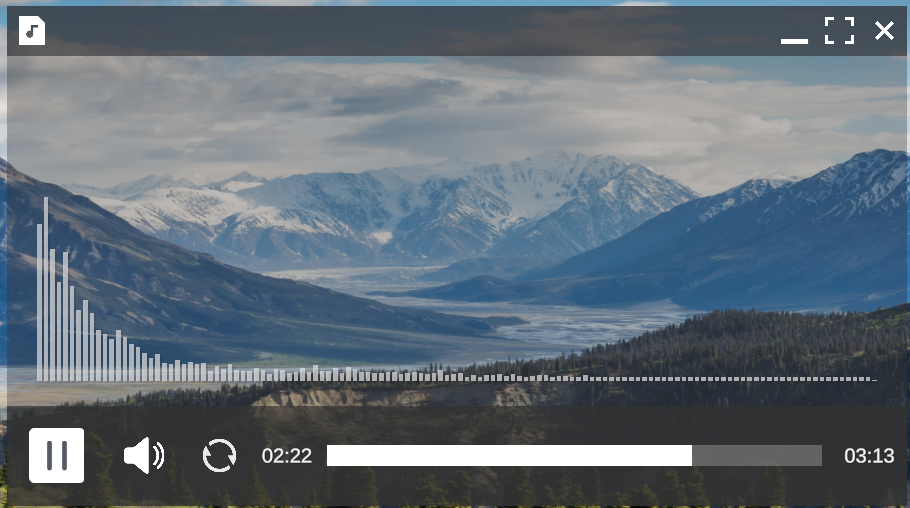

Someone the other day gave me an idea for how to improve the calendar, by having special days! I completely forgot about that and quickly jumped into implementation. Special days are now shown in orange, I had to create a tooltip system for this feature aswell. I think it looks nice, the tooltip is also animated. I have also grayed out the days outside of current month to further emphasise the current month.
The new tooltip will hopefully make it easier to implement future features aswell, such as showing url links or more information on an action.
Calendar
Today I decided to program a calendar system which would be quite important to the gameplay aswell. I also refactored the code, the context menu now uses an interface which means that any thing can have a context menu! This will be quite handy for the "Task Manager" that I will do in the future.
Calendar
In this update I decided to tackle something I was worried about for the last few months (and have been putting off due to difficulty). Yesterday I woke up and suddenly came up with the "perfect" solution.
The problem: Resizing websites was a huge problem, designing was also problematic and time consuming. Instead of relying on Unity's anchors to do everything for me I created this little custom Layout element which lets me automatically resize elements during run time.
I have also added ability to loop music and fixed a bunch of pesky bugs!
New Website Creating Tool
Music loop option
I was not happy with my old UI design, in fact it bothered me everytime I saw it. Today I decided to sit down and design a completely new look. I have these very simple white icons to represent different file types which I think look amazing. The folders have coloured icons so you can easily spot them.
I have also abandoned my old "Type full path here" approach and created breadcrumbs which can be seen on the second screenshot.
I have also discovered that when using Unity's buttons and the "Color Tint" option, you don't have to use the background image but can instead use an icon. I think it looks much better when you highlight the text/icon instead of a background suddenly appearing.
I fixed few bugs and added more bugs to fix later ;)
New UI design
Today I have decided to mess around with a file explorer and since I have created a nice file structure with some methods such as FileSystem.GetFilesInDirectory(string path); and FileSystem.GetFoldersInDirectory(string path); it was very easy to add working folders.
Funnily I struggled more with adding history than displaying the folder structure and making sure u can click on them.
I still need to figure out how to make it look nice, if you are interested in helping me with this project feel free to contact me on the contact page.
A short video showing how file explorer works.
Today I have started re-writing how my files are created. I've realised that simply instantiating files in various places can be problematic when I want more complex behaviour. For example zip files would then require file instances which is way more work than it should be. I have decided to create a file system structure similar to windows one to try and imitate a real operating system more closely. Now I can simply feed the file data into the tree and ask another function to generate it where ever I want it. However I noticed that it's extremely complicated to use in the default Unity inspector, so I have wrote my own (which can be seen in the picture).
Screenshot showing a way to modify the file structure very easily.